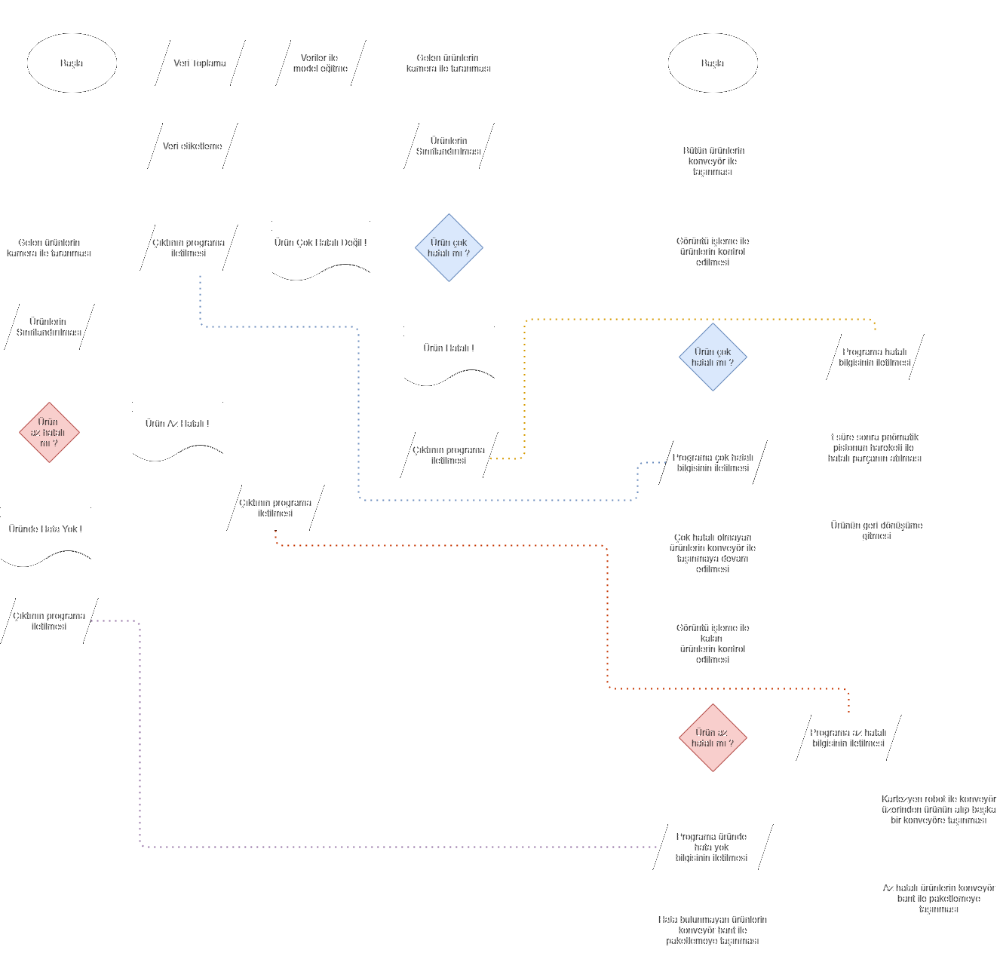
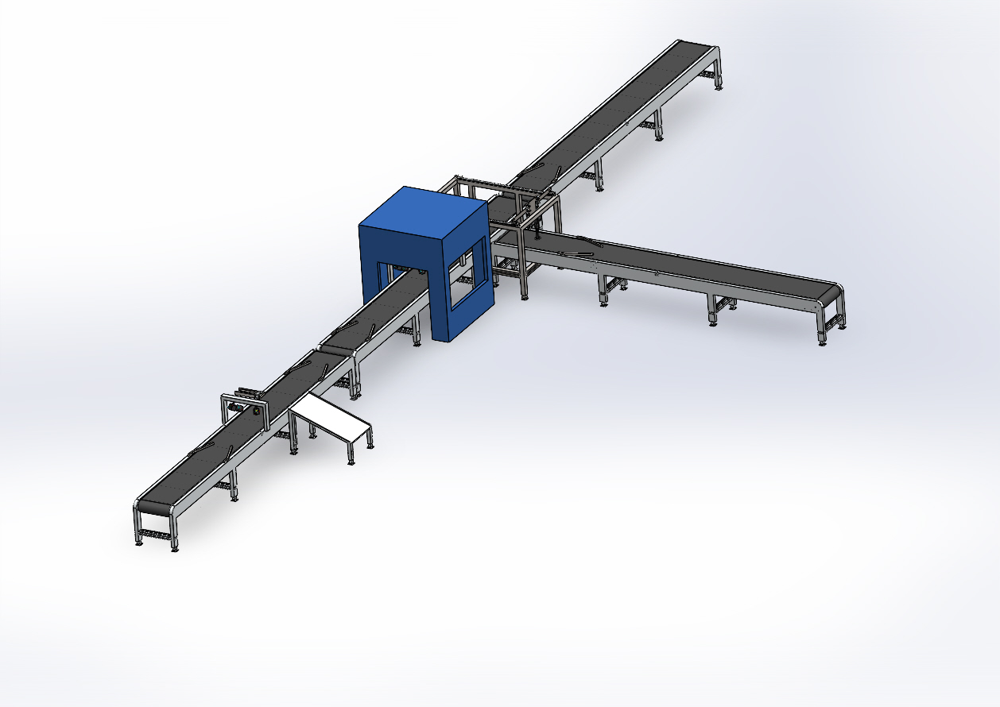
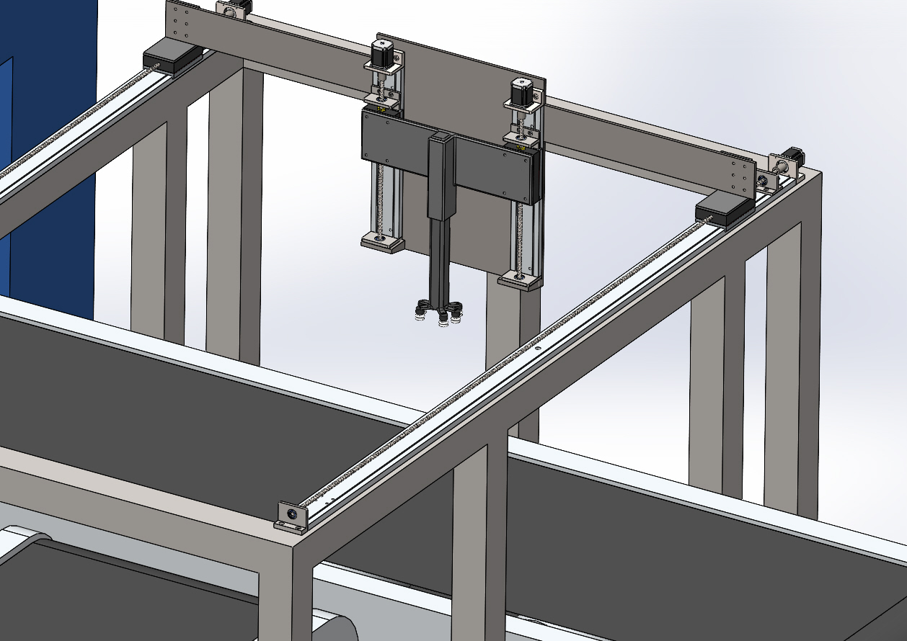
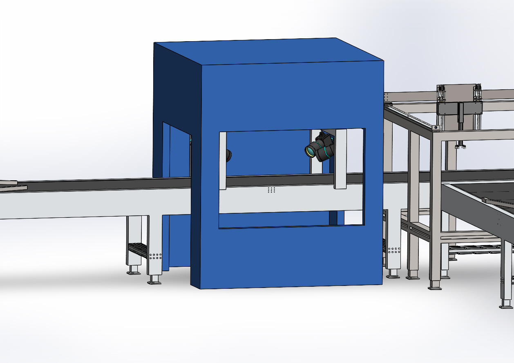
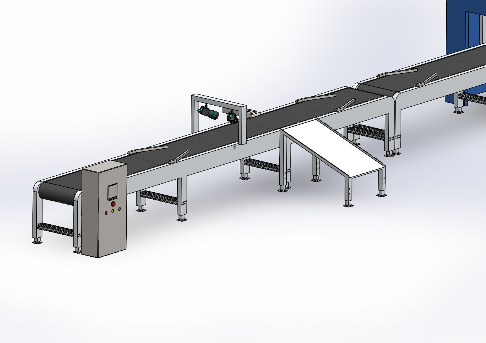

No defect
The product continues toward the packaging conveyor without intervention.
A multidisciplinary production-line concept combining conveyor transport, machine-vision inspection, PLC-based sequencing, pneumatic rejection and Cartesian robotic sorting.
Project Brief
The line was designed to inspect products while they move through a conveyor system and route them according to their detected quality condition. The concept integrates mechanical layout, electrical panel design, PLC sequencing, vision inspection and robotic material handling.
The repository documents the verified design work and engineering logic. The original PLC and Factory I/O source files are not currently available, so the project is presented as a system-design case study rather than an executable software package.
System Workflow
Products are classified by the vision stage and then routed through deterministic PLC-controlled actions.

Mechanical System



Control Design
The control concept was prepared around a Siemens S7-1511-1 PN PLC with HMI supervision, emergency-stop circuitry, three-phase motor protection, relays, contactors and a 24 V control supply.
The documented ladder logic includes start/stop latching, conveyor activation, sensor-triggered timing, Cartesian-axis motion, vacuum-gripper control and production counters.

Routing Logic
The product continues toward the packaging conveyor without intervention.
The Cartesian robot transfers the product from the main conveyor to a separate route for rework or secondary handling.
A pneumatic rejection mechanism removes the product after a PLC-controlled delay.
Engineering Scope
Conveyor frames, branch routes, machine enclosure and Cartesian robot structure were developed as an integrated SolidWorks assembly.
The design maps inspection outcomes to PLC-controlled conveyor, pneumatic and robotic actions.
Panel layout, motor connections, PLC I/O, protection components and a historical bill of materials were documented.
Limitations
The original PLC project, Factory I/O files and vision-model source code are not available in the current archive. The GitHub repository therefore contains the project documentation, process logic, CAD evidence and supporting engineering files.
Any physical implementation would require updated safety validation, electrical review, mechanical analysis, risk assessment and current component selection.
Project Files